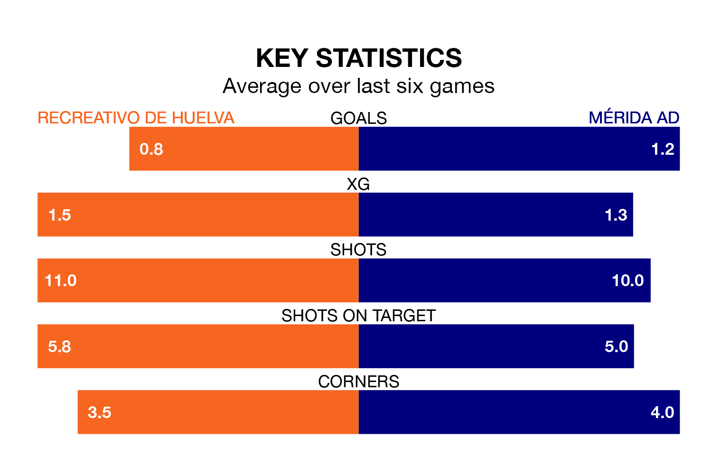

Mérida AD travel to Recreativo de Huelva on early Sunday in Primera Division RFEF Group 2.
The visitors come into the game on the back of a defeat in their last match, having lost to CD Alcoyano 3-1 at home, with a goal from Mohamed Mizzian Salmi.
Recreativo de Huelva, meanwhile, drew their last match, 1-1 against Antequera CF, with their goal scored by Caye Quintana.
With Rubén Ramos González between the sticks, Recreativo de Huelva can rely on one of the league's safest pair of hands. He has kept 11 clean sheets in his 22 appearances this season, and no 'keeper has prevented the opposition scoring more often in Primera Division RFEF Group 2.
In Mérida AD's net, Juan Palomares Pulpillo has four clean sheets in 16 games. He has conceded a goal every 80 minutes, 30% more often than the 104 minutes between goals for Ramos González.
In the last 10 years, Recreativo de Huelva and Mérida AD have played each other on nine occasions. They won two each, and they drew five times.
On average, Recreativo de Huelva scored 0.8 goals and Mérida AD 1.0 in those matches.
Their last meeting was on November 26, when they played out a 0-0 draw.
The hosts are fifth in the table after 28 games, of which they have won 12 and drawn nine, earning 45 points.
The away side are 10 places behind Recreativo de Huelva in 15th, with eight wins and seven draws putting them on 31 points.
With 22 goals in 28 games so far this season, Mérida AD are scoring at below the league average rate with 0.8 goals per game. And they are conceding more than average, letting in 33 goals at a rate of 1.2 per game.
Recreativo de Huelva are also below average scorers, with 1.0 goal per game, compared to a league average of 1.1. They have conceded 0.9 goals per game.
The home team are in disappointing form in Primera Division RFEF Group 2, with one win and three draws from their last six games.
With four wins and a draw over that period, Mérida AD's form is much better – they have taken 13 points from 18, compared to Recreativo de Huelva's six.
Updated: 10:19 (UTC), 22/03/24